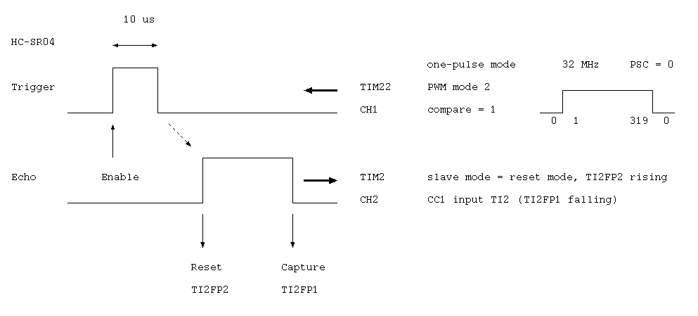

<!-- header -->

<!-- panorama -->

<p></p>
	
<!-- schematic -->

<!-- layout -->

<nav>
	<ul>
	<li><a href="../../../parts/stm32l052k8t/description.html" target="_blank">MCU (STM32L052K8T)</a></li>
	<li><a href="../../../parts/hc-sr04/description.html" target="_blank">Ultrasonic ranging module (HC-SR04)</a></li>
	<li><a href="../../../parts/osl40562-ir/description.html" target="_blank">LED display (OSL40562-IR)</a></li>
	<li><a href="../../../parts/nds332p/description.html" target="_blank">FET (NDS332P)</a></li>
	<li><a href="../../../parts/mcp1702/description.html" target="_blank">Voltage regulator (MCP1702)</a></li>
</ul>
</nav>

<!-- footer -->


